Convolutions from Scratch
A convolution slides a small kernel over the image. At every pixel, it multiplies the kernel by the patch of the image under it and adds everything up. The kernel is flipped by 180 degrees first. Without the flip you get correlation instead, which gives the opposite sign for kernels like Dx.
I wrote two versions using only numpy. Both pad the image with zeros so the output has the same size as the input ("same" padding). The four loop version follows the formula directly: two loops go over the output pixels and two loops go over the kernel entries.
def conv2d_4loops(img, kernel):
H, W = img.shape
kh, kw = kernel.shape
k = kernel[::-1, ::-1] # flip the kernel
ph, pw = kh // 2, kw // 2
padded = np.zeros((H + 2*ph, W + 2*pw)) # zero padding
padded[ph:ph+H, pw:pw+W] = img
out = np.zeros((H, W))
for i in range(H):
for j in range(W):
s = 0.0
for u in range(kh):
for v in range(kw):
s += k[u, v] * padded[i+u, j+v]
out[i, j] = s
return outThe two loop version does the same math. The only change is that the two inner loops are replaced by one numpy expression: I slice out the window under pixel (i, j), multiply it by the flipped kernel, and sum it.
def conv2d_2loops(img, kernel):
H, W = img.shape
kh, kw = kernel.shape
k = kernel[::-1, ::-1]
ph, pw = kh // 2, kw // 2
padded = np.zeros((H + 2*ph, W + 2*pw))
padded[ph:ph+H, pw:pw+W] = img
out = np.zeros((H, W))
for i in range(H):
for j in range(W):
out[i, j] = np.sum(k * padded[i:i+kh, j:j+kw])
return outComparing with scipy.signal.convolve2d
I tested both functions on a grayscale photo of myself (resized to 533 × 400) with a
9 × 9 box filter, Dx = [1, -1] and Dy = [1, -1]T, and
compared them with convolve2d(img, k, mode="same"). The table shows the
largest pixel difference.
| Kernel | 4 loops vs scipy | 2 loops vs scipy |
|---|---|---|
| 9 × 9 box | 7.8e-16 | 4.4e-16 |
| Dx | 0 | 0 |
| Dy | 0 | 0 |
These differences are just floating point rounding, so my results match scipy. Dx and Dy are not symmetric, so they also confirm that the flip is correct. Without the flip, the Dx result would be off by up to 1.28.
Runtime. Timing the 9 × 9 box filter on the same image:
| Method | Time |
|---|---|
| 4 loops | 3.79 s |
| 2 loops | 0.42 s |
| scipy.signal.convolve2d | 0.021 s |
All three do the same number of multiplications. The four loop version is slowest because Python runs every single multiply and add. The two loop version is about 9 times faster because numpy does the inner work in compiled C code. Scipy is about 180 times faster than four loops because the whole thing is written in optimized compiled code.
Boundaries. My functions and scipy's default both pad with zeros. Near the
border, the kernel mixes in these zeros, so the box filtered image gets darker along the
edges. Dx also shows a thin false edge along the left border, because the first
column is compared with the padded zeros. Scipy also offers other options, like
boundary="symm", which mirrors the image at the border and avoids these
problems. I used that option in the later parts.
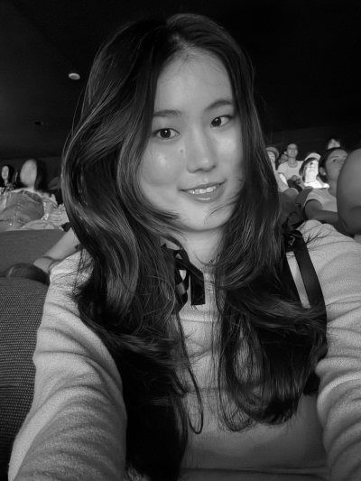
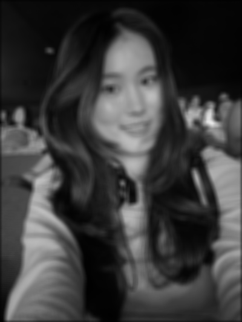
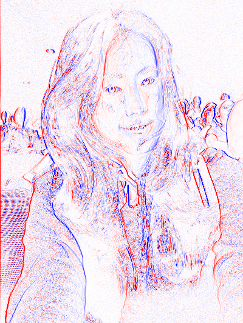
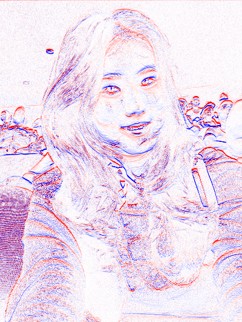
Dx responds to vertical edges (brightness changing left to right) and Dy responds to horizontal edges. Their outputs can be negative, so I show them with a red and blue color map centered at zero.
Finite Difference Operator
I convolved the cameraman image with Dx and Dy to get the partial
derivatives, then combined them into the gradient magnitude, which measures edge strength
in any direction:
magnitude = sqrt(dx**2 + dy**2).
Two details mattered here. First, I used boundary="symm" so the image border
would not show up as a fake edge. Second, the provided PNG has a thin white border inside
the file itself, which created a white frame in every edge map. I cropped it off
(img[7:541, 1:535]) before doing anything else.
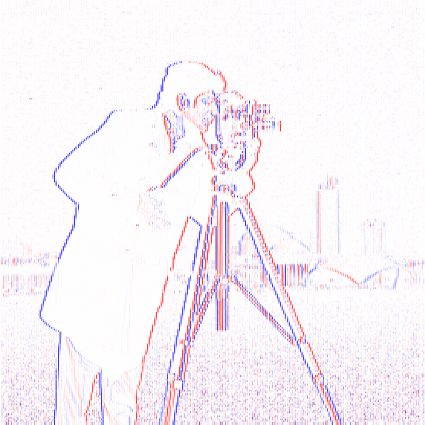
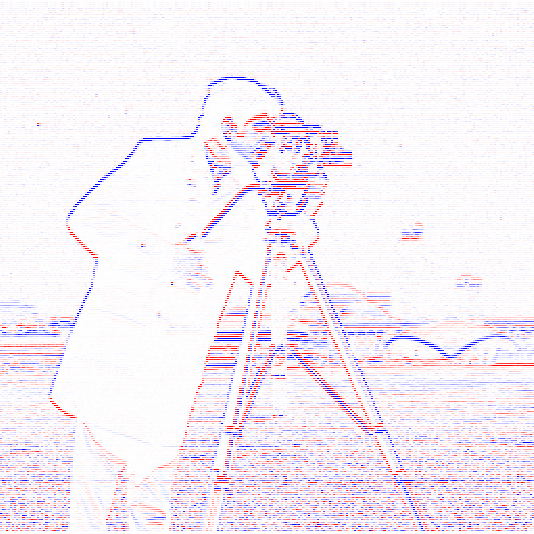
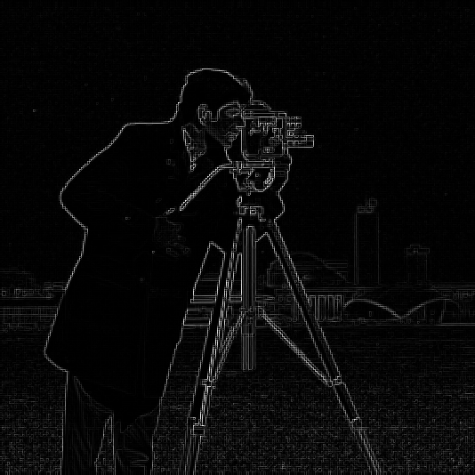
Choosing a threshold
To get an edge image, I marked every pixel with magnitude above a threshold t as an edge. I tried four values:
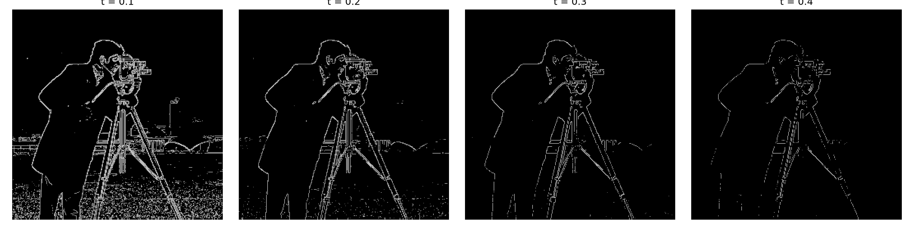
- t = 0.1: the grass turns into white noise everywhere.
- t = 0.2: much cleaner, but there is still speckle in the grass.
- t = 0.3: the person, the camera and the tripod are all there, and almost all of the grass noise is gone.
- t = 0.4: real edges start breaking apart, like the coat and the tripod legs.
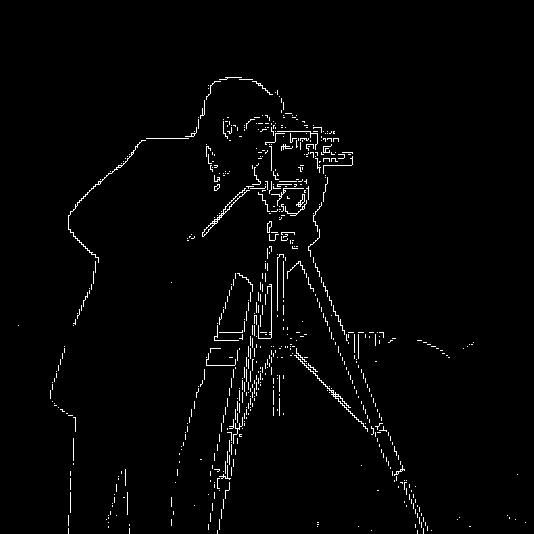
I chose t = 0.3. At this value only about 2.5% of the pixels count as edges, compared to 8% at t = 0.1. The tradeoff I accepted is that the faint buildings in the background disappear and a few parts of the tripod legs are broken. I decided that removing the grass noise was worth losing those weaker edges.
I could not find a threshold that keeps every real edge and removes all of the noise. The finite difference reacts to every small change between neighboring pixels, including noise. The next part fixes this.
Derivative of Gaussian (DoG) Filter
To reduce the noise, I blurred the image with a Gaussian first. I made a 1D Gaussian with
cv2.getGaussianKernel and took its outer product with itself to get a 2D
Gaussian. I used σ = 2 with a 13 × 13 kernel. The kernel size follows the rule
2 * ceil(3 * sigma) + 1, because almost all of a Gaussian's weight (99.7%) lies
within 3σ of the center.
Method A: blur first, then take the derivatives
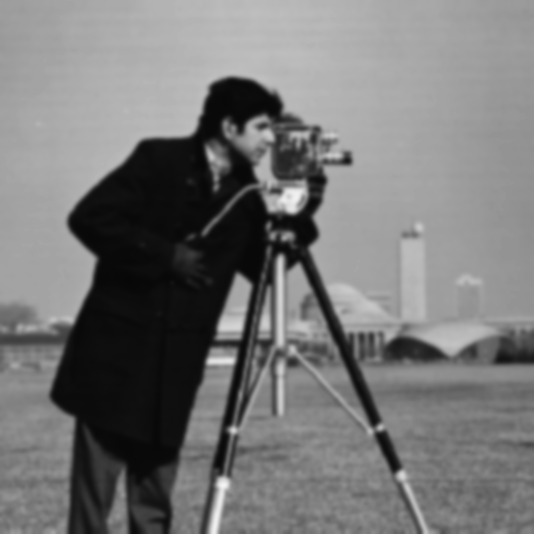
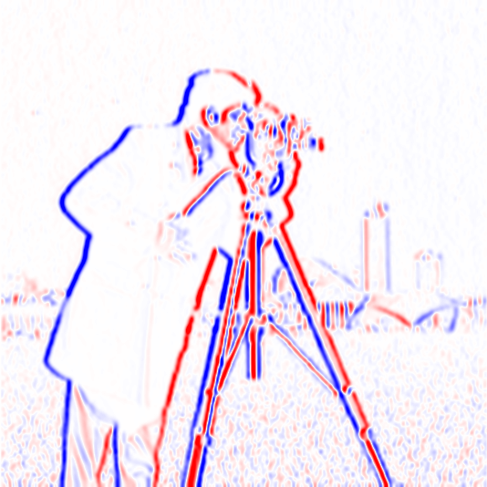
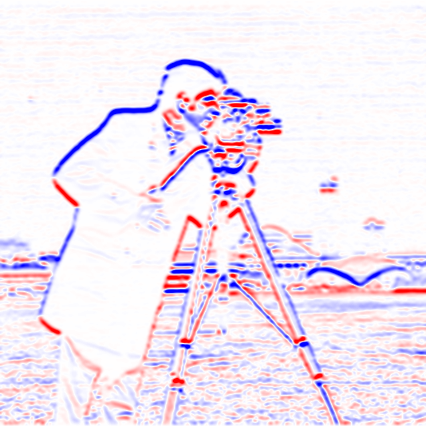
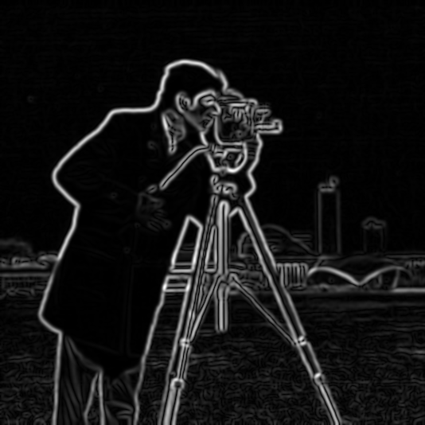
After blurring, the largest gradient value is only 0.155 (compared to 0.95 before), because each edge is now spread over several pixels. So I needed a much lower threshold:
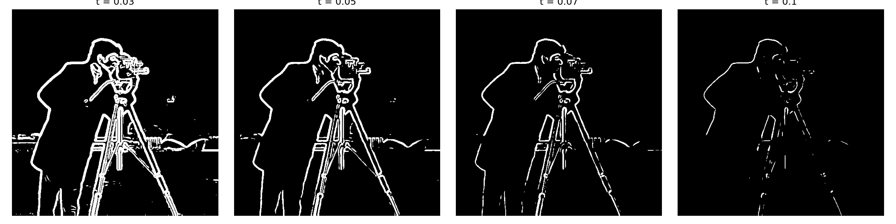
I picked t = 0.05. It is the first value where the grass is completely clean while the background buildings and horizon are still there. At 0.07 the horizon and the bottom of the tripod legs start to break apart.
Method B: one convolution with DoG filters
Convolution is associative, so (I * G) * Dx = I * (G * Dx). This means I can
build the derivative of Gaussian filter G * Dx once and apply it to the image
with a single convolution. I built the DoG filters with zero padding (scipy's default "full"
mode). At first I used boundary="symm" here too, and the results did not match.
Mirroring is fine for images, but a kernel is truly zero outside its edges, so it should be
padded with zeros.
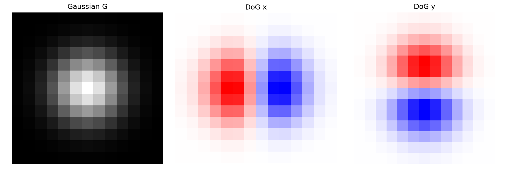

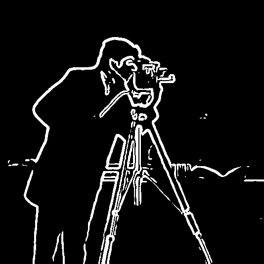
The two methods give the same result. The largest difference in gradient magnitude is 9.1e-16, measured away from a thin strip at the border. At the border they can differ a little, because method A pads the image twice (once per convolution) and method B pads it only once.
Comparing with the finite difference method
- Much less noise. The grass speckle is gone, because the blur averages out small random changes before the derivative is taken.
- More complete edges. The background buildings that I had to give up in 1.2 now survive, and the outlines are continuous instead of broken.
- Thicker, smoother edges. The blur spreads each edge over several pixels, so the lines are wider and their exact position is less precise. This is the cost of smoothing.
Bells and Whistles: Gradient Orientation
At each pixel, the gradient (dx, dy) points in the direction where the image gets brighter fastest. I showed this direction as color, using HSV: the hue is the orientation, the saturation is 1, and the brightness (value) is the gradient magnitude. Flat areas have no real direction, so making them dark hides that noise and only the edges show color.
The assignment asks not to use built-in angle functions like np.arctan2.
Hue does not need the exact angle, though. It only needs a number that goes around the
circle in the same order as the angle. I used a "pseudo-angle" that only needs addition,
division and absolute values:
def orientation_hue(dx, dy):
s = np.abs(dx) + np.abs(dy)
p = np.divide(dy, s, out=np.zeros_like(dy), where=s > 0) # in [-1, 1]
a = np.where(dx >= 0, p, 2 - p) # right half: -1..1, left half: 1..3
return np.mod(a, 4) / 4 # wrap around, scale to [0, 1)I checked it against the true angle: it is never more than about 4 degrees off, which is not visible as a color difference. I used the DoG gradients from 1.3 (σ = 2), because orientation is even more sensitive to noise than magnitude.
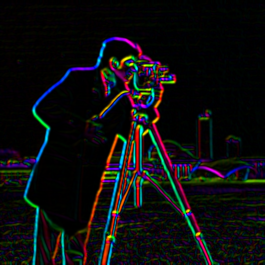
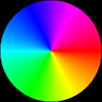
Red means the image gets brighter to the right, cyan means brighter to the left, and green and magenta mean brighter downward and upward (image y points down). For example, the left edge of the coat is cyan-blue, since the bright sky is on the left. Each tripod leg has opposite colors on its two sides, because the leg is darker than the grass on both sides.
Image "Sharpening"
A Gaussian blur is a low pass filter: it keeps the smooth, slow changes and removes fine
detail. So if I subtract the blurred image from the original, only the high frequencies
(edges and texture) are left. An image looks sharper when its high frequencies are
stronger, so I add them back with a weight α:
sharp = img + alpha * (img - blur(img)).
This can be written as one convolution. A kernel with a single 1 in the center (the unit
impulse δ) leaves an image unchanged, so img = img * delta. Then
sharp = img * ((1 + alpha) * delta - alpha * G). The filter in brackets is the
unsharp mask filter. I checked that the one convolution version matches the step by step
version: the largest difference is 1.8e-15. For color images I filter each channel
separately. I used σ = 2 for all results here.
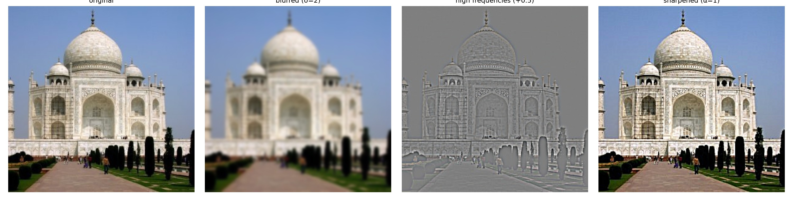
Changing the sharpening amount
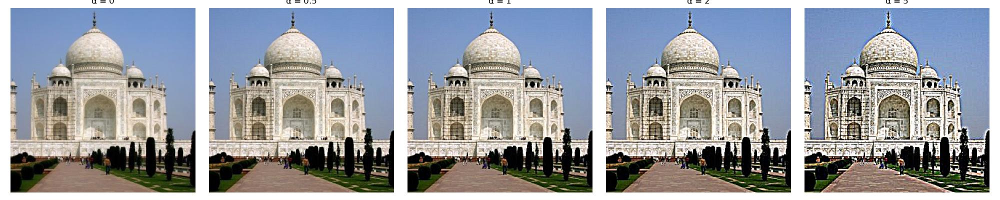
At α = 0.5 to 1 the carvings and windows look crisper and the image still looks natural. At α = 2 the dome texture starts to look rough. At α = 5 it is clearly over sharpened: there are bright halos around the dome and the trees against the sky, and the noise and JPEG blocks in the sky become visible. For the Taj Mahal I think α = 1 is the best balance.
My own blurry photo
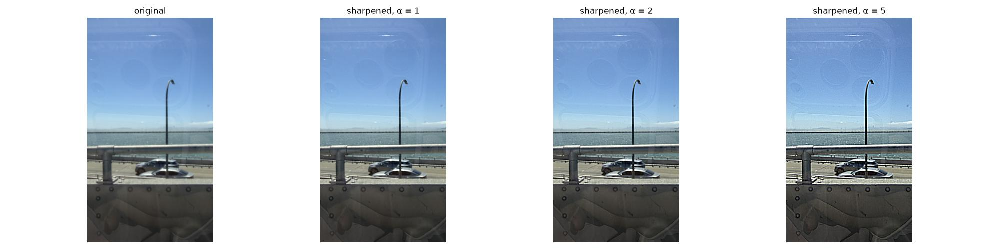
This photo has three kinds of blur, which made it an interesting test. The lamp post, railing and bolts are just a bit soft, and sharpening helps them a lot. The cars were moving, so they have motion blur, so they get sharper outlines but stay smeared. The Gaussian is round, so it cannot undo blur that only goes in one direction. The window also had smudges and reflections, and at α = 5 those become very visible, because unsharp masking boosts all high frequencies, including the ones I do not want. I would pick α = 2 here.
Evaluation: blur a sharp image, then sharpen it again
To test how well sharpening really works, I started with a sharp photo, blurred it myself (σ = 2), and then sharpened the blurred version (σ = 2, α = 2). This way I can compare the result with the original.
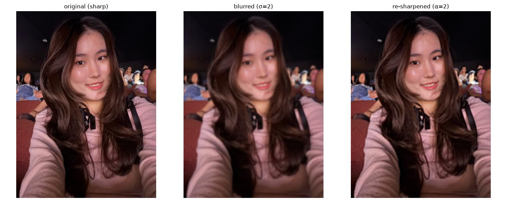
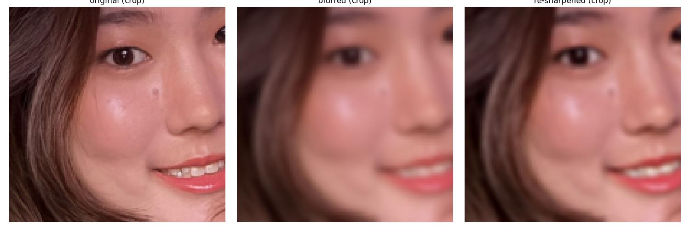
The mean pixel error compared to the original went from 0.0216 (blurred) to 0.0180 (re-sharpened), about 17% better. At normal size, the re-sharpened image looks almost as sharp as the original, because our sense of sharpness depends a lot on edge contrast. The zoomed crop shows what did not come back: the small highlight in the eye, the gaps between the teeth, single hair strands and the skin texture. Bigger features like the outline of the eyes and lips did come back. Sharpening can only boost frequencies that are still in the image. It cannot bring back detail that the blur removed completely.
Hybrid Images
A hybrid image combines the low frequencies of one image with the high frequencies of another. Up close, the high frequencies dominate what we see. From far away we can only see the low frequencies. So the image changes depending on how far away you are.
def hybrid_image(im_low, im_high, sigma_low, sigma_high):
low = gaussian_blur(im_low, sigma_low) # low pass
high = im_high - gaussian_blur(im_high, sigma_high) # high pass
return low + high, low, highHybrids need large σ values (up to 16 here), so a 2D kernel would be up to 97 × 97. I blur with two 1D Gaussians instead (rows, then columns). This gives the same result, because a 2D Gaussian is the outer product of two 1D Gaussians, but it is much faster.
Derek and Nutmeg (full process)
I aligned the images with the starter code by clicking the two eyes in each image. I made one change to the alignment code. It pads the images with black to center the eyes, and that black border created a strong false edge, which showed up as a sharp line in the high pass image. I changed the padding (and the empty corners after rotation) to copy the edge pixels outward instead. That leaves only some faint vertical streaks at the top.

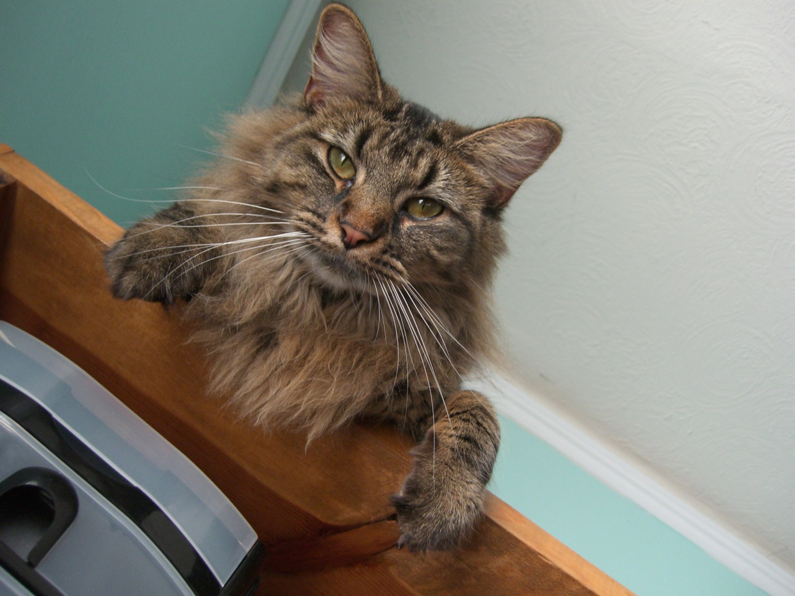
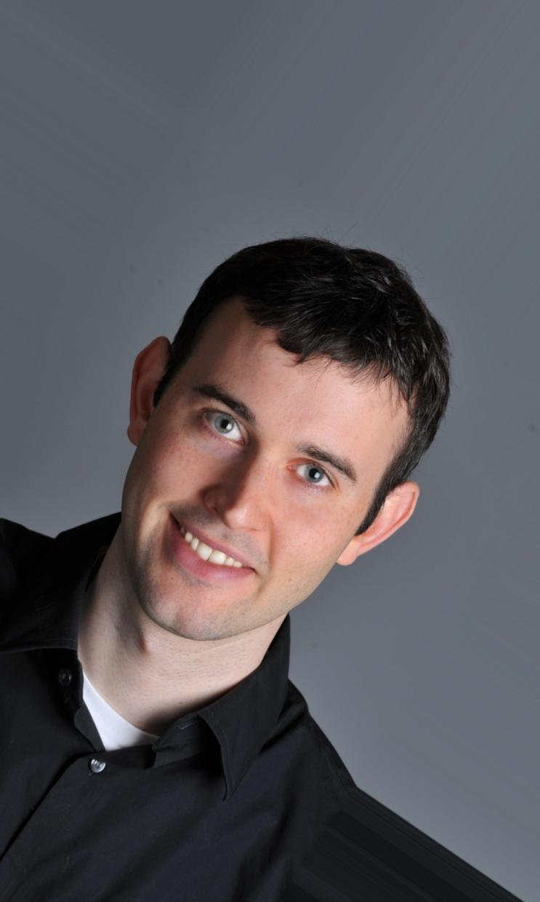
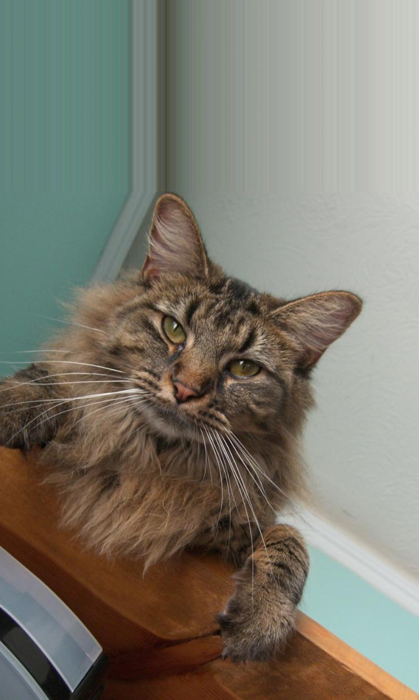
Derek is the low frequency image and Nutmeg is the high frequency image. The cat's whiskers and fur are naturally fine detail, while Derek is recognizable from the overall shape of his head and the shading of his face.
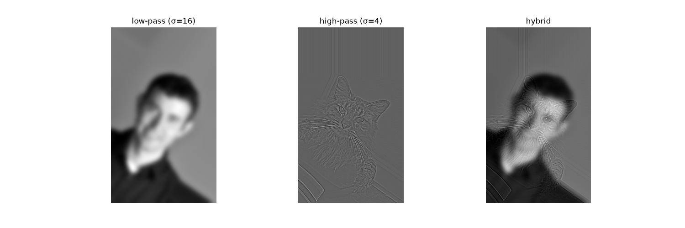
Choosing the cutoff frequencies
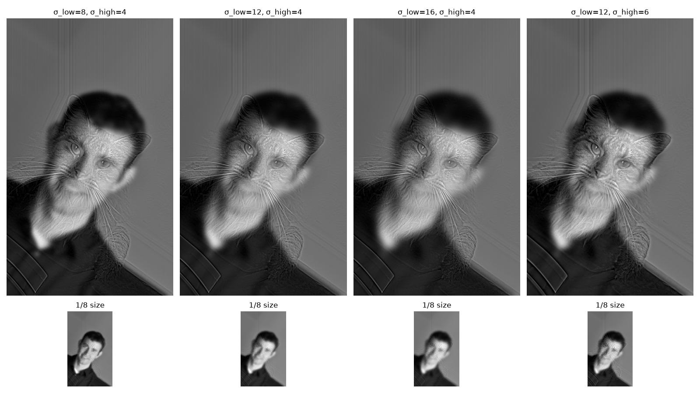
I tried (σlow, σhigh) = (8, 4), (12, 4), (16, 4) and (12, 6). At σlow = 8, Derek's eyes and mouth are still sharp up close and compete with the cat. At 16, Derek is just a soft face shape up close, and he is still easy to recognize when small. A larger σhigh keeps more of the cat, but more of it also leaks into the far view. I chose σlow = 16 and σhigh = 4.
A Gaussian with standard deviation σ (in pixels) cuts frequencies above roughly 0.19 / σ cycles per pixel (where its response drops to half). So Derek keeps frequencies below about 0.012 cycles per pixel (features bigger than about 85 pixels), and Nutmeg keeps frequencies above about 0.047 cycles per pixel (details smaller than about 20 pixels). There is a gap between the two bands, so the two images do not compete much.
When making the small versions, I first used h[::8, ::8], which just keeps
every 8th pixel. That turned the fur into random dots (aliasing). Averaging blocks of
pixels with cv2.INTER_AREA is closer to what our eyes do from far away.
Frequency analysis
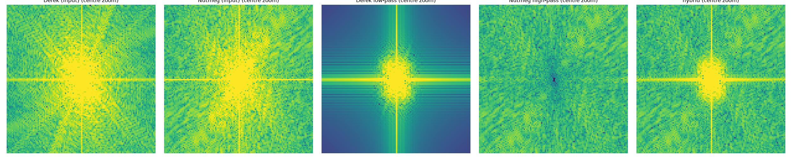
The center of each plot is the low frequencies and the outside is the high frequencies. I used one shared color scale for all five panels. Each panel had its own scale at first, which made the high pass look brighter than the input, even though it is not.
- Inputs: bright in the center and fading outward, like most photos.
- Derek low pass: only a bright blob in the center is left.
- Nutmeg high pass: the opposite, a dark hole in the center while the outside stays the same as the input.
- Hybrid: Derek's blob in the middle, surrounded by Nutmeg's high frequencies. It really is just the two spectra added together.
The bright cross through the center comes from the image borders. The FFT treats the image as if it repeats, and the jump between opposite edges shows up as a horizontal and a vertical line.
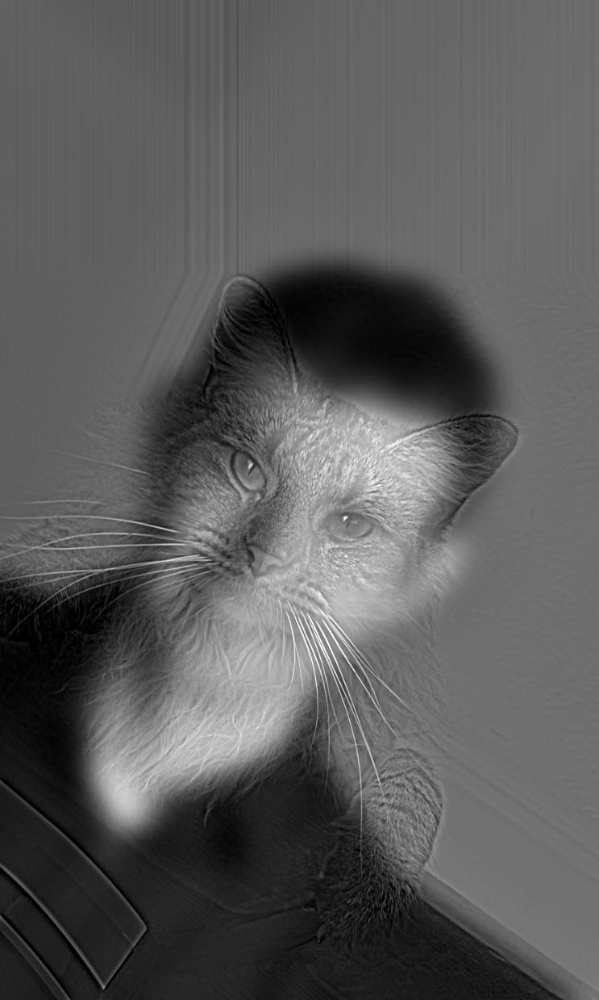
My own hybrid 1: baby me and me now
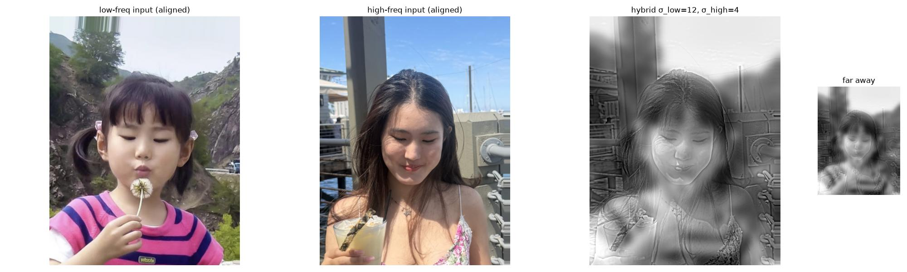
This is a "change over time" hybrid: up close you see me now, and from far away you see me as a baby. My current photo has more fine detail (hair strands, the pattern on my dress), so it is the high frequency image. The baby photo is recognizable from the bangs, the pigtails and the round face, so it is the low frequency image.
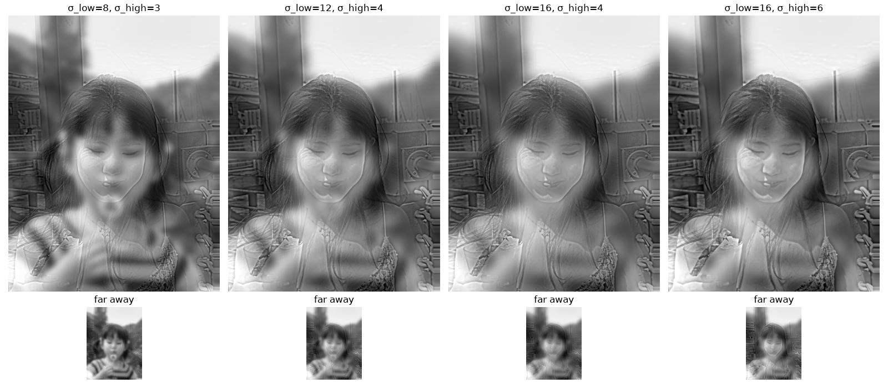
I chose (12, 4). At (16, 4) the close view is a little cleaner, but the baby becomes hard to recognize from far away. At (12, 4) the pigtails and striped shirt still read clearly from a distance, while my current face and hair dominate up close. At (16, 6) too much of me now leaks into the far view. One thing never fully goes away: the baby's pouting lips. The pout changes the shading of the whole lower face, which is a large scale feature, so it survives even a strong blur. Hybrids work best when the two images mainly differ in fine detail.
My own hybrid 2: my toy tiger and baby me
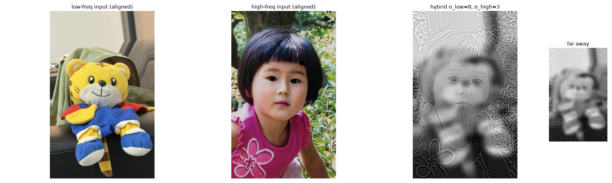
I first tried it the other way around, with the baby photo as the low frequency image:
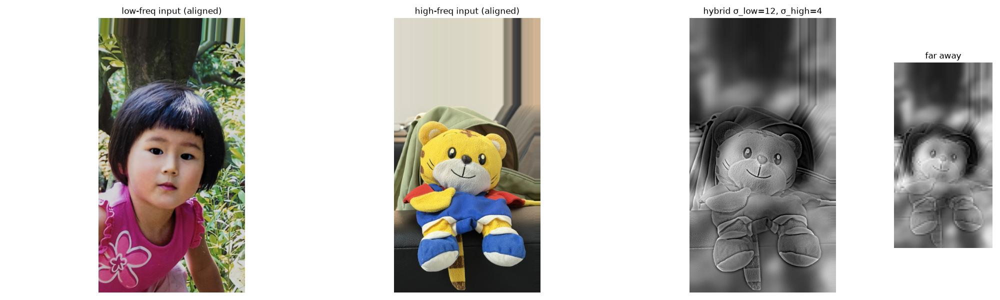
That did not work. From far away, the tiger's thick black outlines and big blocks of color still dominated, and the baby's soft, low contrast face did not come through. Sharp, high contrast edges have energy at many frequencies, not only high ones, so they survive shrinking. Swapping the roles worked much better: the tiger is recognized by its big shapes, which survive the low pass, and the baby by fine detail (eyes, hair strands, the flower on the shirt), which the high pass keeps.
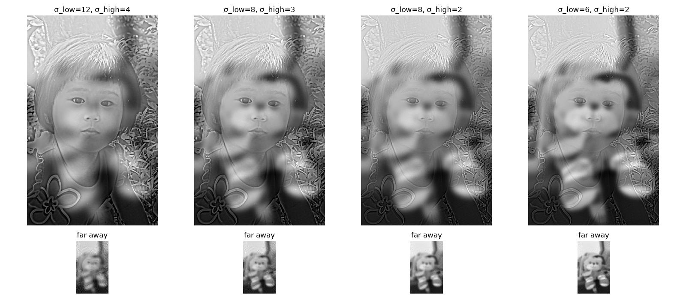
I chose (8, 3). At (12, 4) the baby dominates both views. At (8, 2) and (6, 2) the tiger's bright feet and arms show up as blobs on top of the baby up close. The tiger's eyes were near the top of its photo, so the alignment code had to add a lot of padding on top. I cropped the top 15% of the final hybrid (after filtering) to hide the most visible part of it. The beige area in the top right corner is also padding (the stretched top row of the tiger photo), but cropping more would cut off the baby's head, so I left it.
Bells and whistles: using color
I made four versions of each hybrid: gray low + gray high, color low + gray high, gray low + color high, and color for both.
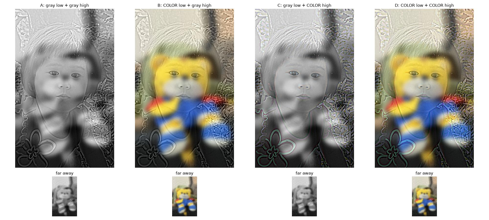
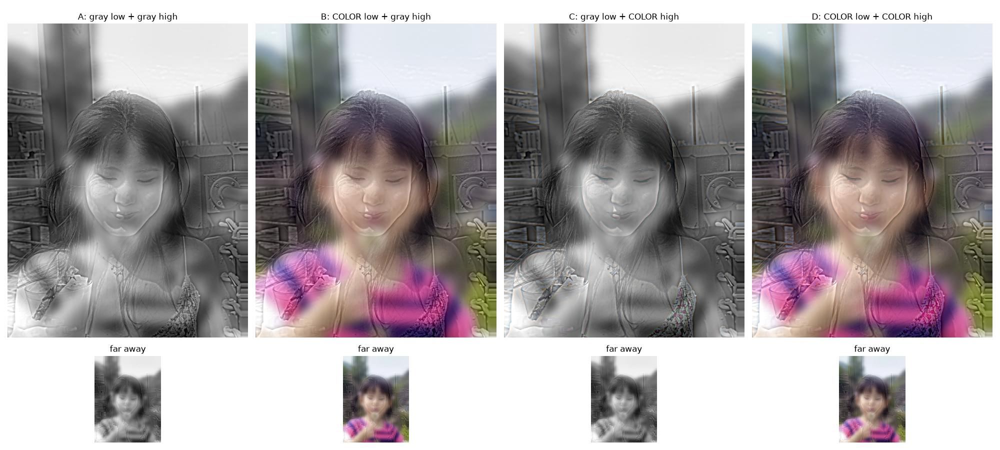
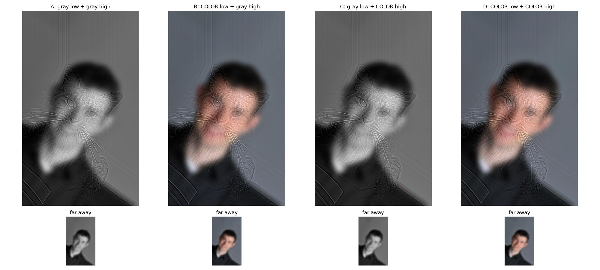
Color in the low frequency image works best. It makes the far image much easier to recognize, like the tiger's yellow face and blue overalls, or the baby's pink striped shirt. The downside is that strong colors also stay visible up close and compete with the high frequency image. In the tiger example, the bright yellow and blue blocks get a bit distracting in the close view.
Color in the high frequency image adds almost nothing. Version C looks almost the same as A, and D looks almost the same as B. In natural photos, color mostly comes in large uniform areas, like a pink shirt or skin. The high pass removes those areas and only leaves faint colored fringes along edges, like the slightly teal outline of the flower on the baby's shirt. This matches how our vision works: we are much less sensitive to fine color detail than to fine brightness detail. So I would use color for the low frequency image only.
Gaussian and Laplacian Stacks
A Gaussian stack is a list of more and more blurred copies of an image. A stack is like a pyramid, but the images are never downsampled, so every level has the same size. Each level of the Laplacian stack is the difference between two neighboring Gaussian levels, so it holds one band of frequencies. The last Laplacian level is the blurriest Gaussian level itself.
def gaussian_stack(img, levels, sigma=2):
stack = [img]
for i in range(levels):
stack.append(gaussian_blur(stack[-1], sigma * 2**i)) # blur the previous level
return stack
def laplacian_stack(img, levels, sigma=2):
G = gaussian_stack(img, levels, sigma)
return [G[i] - G[i + 1] for i in range(levels)] + [G[-1]]In a pyramid, each level is half the size, so the same blur has twice the effect at the next level. To get similar behavior without downsampling, I double σ at every level (2, 4, 8, 16, 32). I used 5 levels. All the Laplacian levels added together give back the original image exactly (the largest error was 1.1e-16), because the sum cancels out: (G0 - G1) + (G1 - G2) + ... + G5 = G0. This is what makes blending possible in the next part.


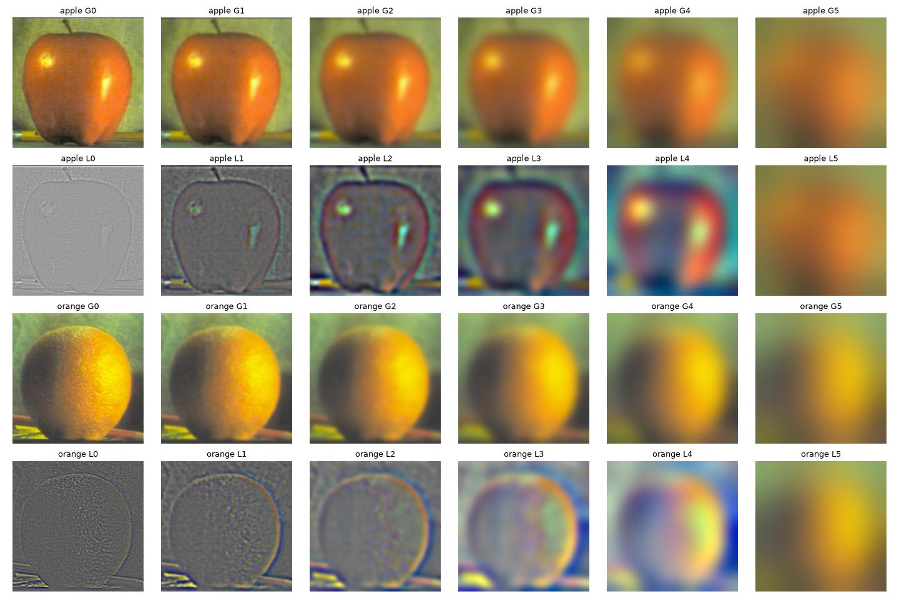
L0 only has the finest detail, like the orange's dimpled skin. L1 and L2 have outlines and highlights, L3 and L4 have large scale shading, and L5 is the leftover blurry colors. The Laplacian levels are mostly small values around zero, so I stretched each one to [0, 1] to make it visible. This stretching is also why some levels show strange colors like cyan and bright green. The real values are small.
Multiresolution Blending
To blend two images A and B with a mask, I build Laplacian stacks of A and B and a Gaussian stack of the mask. Then I blend each level with its own version of the mask and add all the levels back together. This is the mask version of the algorithm from Burt and Adelson.
def blend(im_a, im_b, mask, levels=5, sigma=2):
LA = laplacian_stack(im_a, levels, sigma)
LB = laplacian_stack(im_b, levels, sigma)
GM = gaussian_stack(mask, levels, sigma)
if im_a.ndim == 3:
GM = [g[..., None] for g in GM] # same mask for R, G and B
blended = [GM[i] * LA[i] + (1 - GM[i]) * LB[i] for i in range(len(LA))]
return sum(blended), blended, LA, LB, GM
The mask is sharp at level 0 and gets blurrier at each level. So fine detail switches over
sharply at the seam (no ghosting of the two textures), while colors and shading change
slowly over a wide area (no visible color step). One bug I hit: I first looped over
range(levels), which skipped the last, blurriest level. The result had all the
edges but no base colors and looked very dark.
The oraple
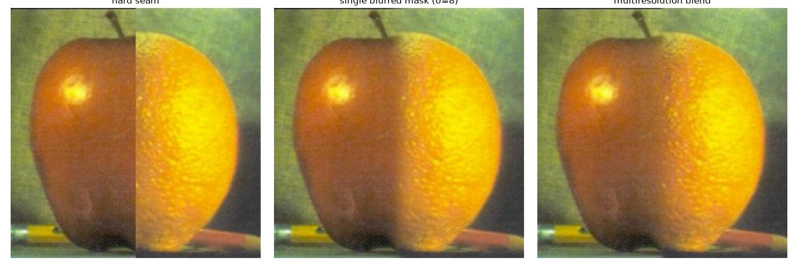
The hard seam shows a clear vertical line. Blurring the mask once removes the line, but creates a muddy band in the middle where the orange's dimples fade over the apple. The multiresolution blend has no visible seam, and both textures stay clean right up to the middle. The thin dark line at the top of the left half is in the apple image itself.
Recreating Figure 3.42
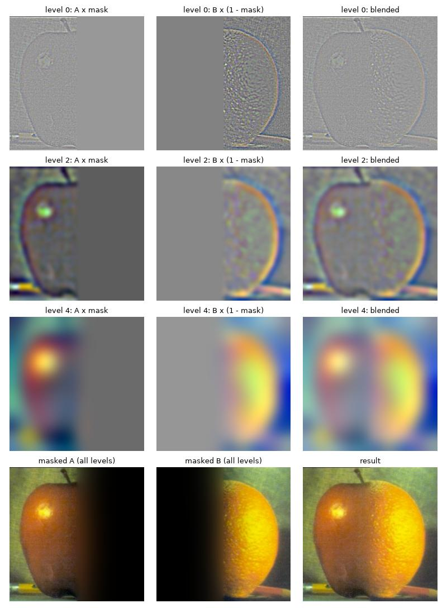
The key thing to see is how the transition gets wider from level 0 to level 4. At level 0 it is a sharp line, at level 2 it is a little softer, and at level 4 the two halves fade into each other over a wide area. Each frequency band gets its own transition width.
My blend 1: half egg yolk, half mango honey toast (straight seam)
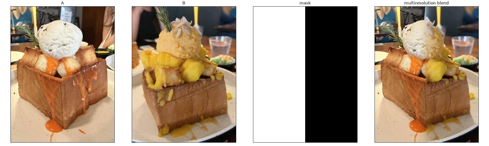
I aligned the two photos with the same starter code as for hybrids, but clicked the bottom corners of the toast block instead of eyes. The toast block blends without a visible seam, and the drizzle stays sharp on each side. The ice cream is less convincing: there is still a soft dividing line between the white and orange scoops. I aligned the photos on the toast, so the two scoops do not line up, and they are also very different in texture (smooth vs. cracked) and color. Multiresolution blending smooths the color change, but it cannot make two different objects line up. It works best when the content on both sides of the seam is similar, like the apple and the orange.
My blend 2: salmon and tuna nigiri (irregular mask)
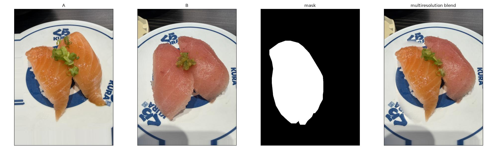
Here I replaced the left tuna piece with a salmon piece. I aligned the photos by clicking
the centers of the two pieces, then drew the mask by clicking a polygon on a 50/50 overlay
of both photos, so it covers both left pieces. My first mask only followed the salmon piece,
and part of the tuna piece showed through underneath like a ghost. Even after fixing that, a
pale band remained, because the coarse levels blend over a wide area near the mask edge.
Two things fixed it: growing the mask by 15 pixels with cv2.dilate, so its edge
sits on clean plate, and using 4 levels instead of 5, so the widest transition is narrower.
A very faint pale spot is still left at the lower left, because the blue pattern on the
plate is in a different place in the two photos. Blending cannot fix content that does not
match.
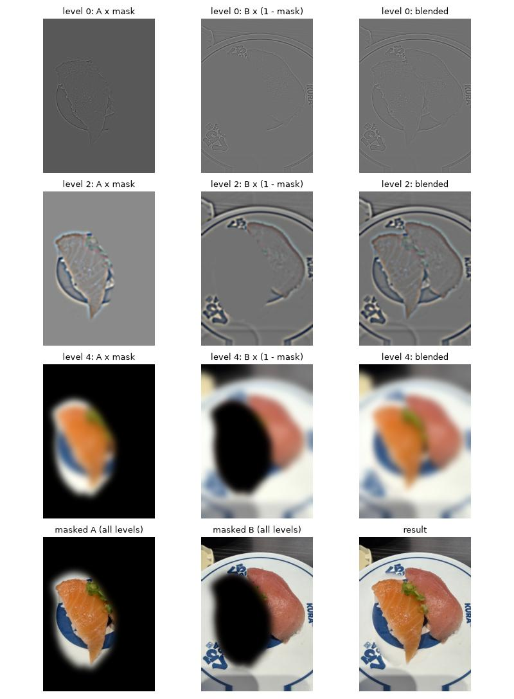
With the irregular mask, you can see the transition get wider around the outline of the fish: sharp at level 0, softer at level 2, and a wide soft halo at level 4.
Bells and whistles: color
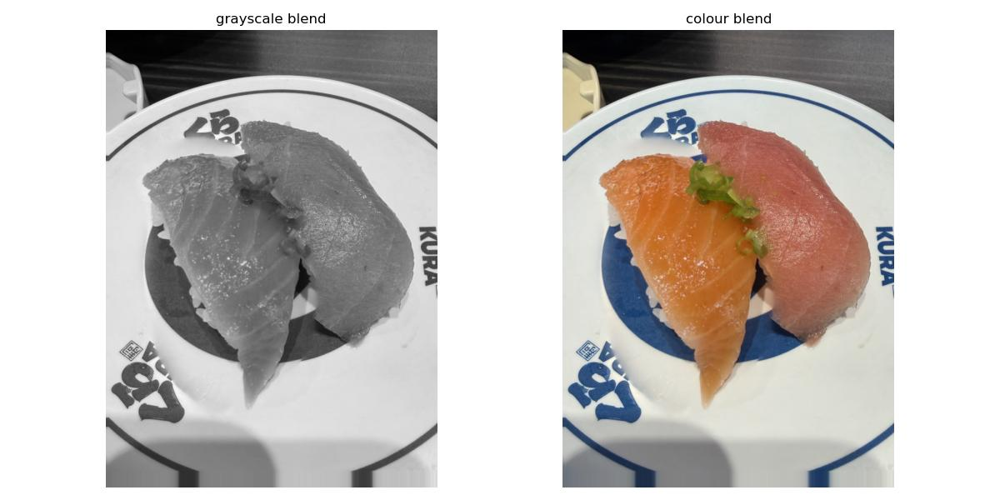
In grayscale, salmon and tuna are almost the same brightness. The blend is seamless, but only because there is very little difference left to hide, and you cannot even tell that a piece was swapped. In color, the swap is obvious (orange vs. red), and the blend has to hide a large color difference right at the mask edge. Since each color channel is blended level by level, the coarse levels spread the orange to red change over a wide area, and there is still no visible edge around the salmon. So color makes the effect much stronger without showing the seam.
What I Learned
The most important thing I learned is to think about images as a mix of frequency bands. Almost everything in this project came from two simple operations, blurring with a Gaussian and subtracting. Blur keeps the low frequencies, and original minus blur keeps the high frequencies. Edge detection, sharpening, hybrid images and blending are all different ways of separating and recombining these bands.
The second thing I learned is that small details at the borders matter a lot. Zero padding made fake edges in Part 1, the white border in the cameraman file made a fake frame, and the padding from the alignment code made lines and streaks in my hybrids and blends. Many of my "bugs" were not in the main algorithm at all, but in what happened at the edges of the image.